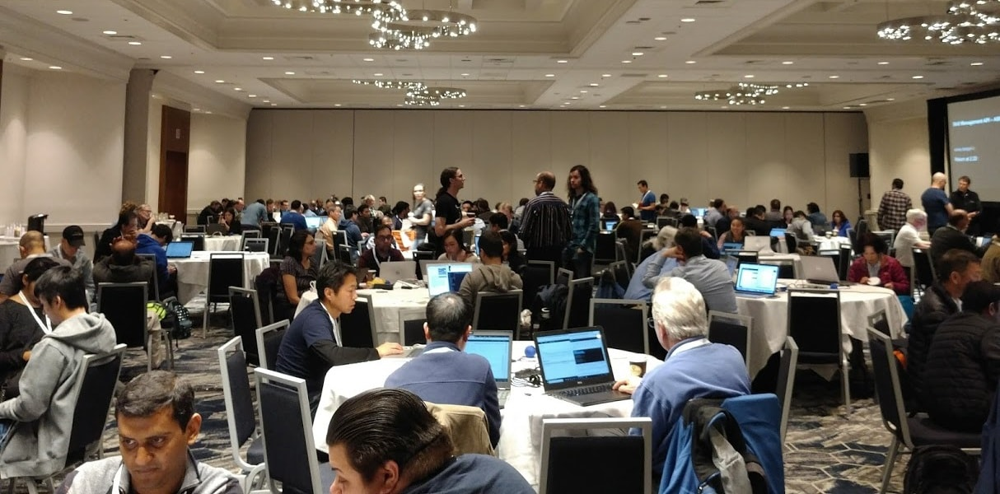

Last modified: Wed Mar 07 2018 05:10:52 GMT+0800 (Malay Peninsula Standard Time)
Events I attended
How I got started
I started to attend conferences and hackathons when I was in college in USA. For those who do not know what conferences or hackathons is, I will try to explain it in a few words. Conference is an event where people (in the industry) share their experiences and what they are working on to the public. This includes showing quick demo, talks about technology, and announce their new product to the public. In the other hand, hackathons are the place where people use technologies to create more useful stuff. It usually come with prizes so that it will attendee. Some of the things that you invented during the hackathon will belong to the event organizer. So, it is very important to check with the Terms and Conditions before sign up!
These are the badges I received over the last few years (up to August 2017).
Conferences
Below are a list of conferences I attended. I enjoy going to conferences, especially the private sessions that allow you to learn even more about the product or technology that they do.
GPU Technology Conference 2014 - San Jose, CA - 25 Mar 2014
The first conference that I attended. My school department sent out e-mail and promo code for the ticket. Each of the attendee walked away with Nvidia Shield (Android powered portable gaming console).
I Love APIs Conference 2015 - San Jose, CA - 12-13 Oct 2015
the second conference that I attended. My school department sent out e-mail and promo code for the ticket. This conference was hosted in Civic National Center - one of the best theater in Bay Area. The opening ceremony was very unforgettable.
GDC 2016 - San Francisco, CA - 14-18 Mar 2016
GDC stands for Game Developers Conference. That was the largest conference I had been to at that time. I tried out a lot of interesting games and checked out many of the new innovative types games.
GPU Technology Conference 2016 - San Jose, CA - 4-7 April 2016
I volunteered in the conference. I was involved in setting up the computers in the conference. It was a great experience to see how things work behind the scene.
Internet of Things World - Santa Clara, CA - 11-12 May 2016
I learnt about may of the available IoT products. The main purpose of attending was to get more information about the trend.
ARM TechCon 2016 - Santa Clara, CA - 25-27 Oct 2016
I went to the conference with my friend to look for more ARM development board and demo about image recognition. We were trying to look for possible development board for one of our projects.
Wireless Global Congress - San Jose, CA - 14-17 Nov 2016
My first conference about wireless technology. I learnt a lot about the how other countries implement internet in the rural area and how advance countries tried to bring down the cellular tower traffic.
CES 2017 - Las Vegas, NV - 5-7 Jan 2017
With more than 184,000 attendee and 4015 exhibiting companies, CES 2017 was the biggest conference I attended at that time (with the most numbers of attendee and exhibitors). It was a complete different story when it came to attending a large scale event. With limited time, I had to go through things very quickly in order to try my best to visit all the booths. I saw a lot of wonderful technology and talked to a lot of supply chain companies.
CES 2018 - Las Vegas, NV - 9-12 Jan 2018
The largest conferences I had been to in terms of the floor size - 2.75 million net square feet of exhibiting. CES 2018 was not as great as CES 2017 according to the conversation that I had with a few other people that attended, but I had fun looking at new technologies and tried it out. I sat on the self driving Lyft.
Alexa Developer Day - San Jose, CA 13 Feb 2018

Amazon Alexa's Developer conference. I saw a lot of improvement on the Web UI compared to the first time I used it about a year. The development process for Alexa app was so much better right now compared to before.
INDEX Developer Conference - San Francisco, CA 20-22 Feb 2018
One of my friend told me about this conference and I invited my another friend to attend it with me. There were a lot of sessions that talked about the trends. Some sessions were for beginner and some were for advance attendee. This conference had the most interesting schedule and sessions. I love how relax it was
Hackathons
Below are a list of Hackathons I attended. I enjoy going to hackathons, create some interesting stuff with friends that I was not even have time to do in school while I was in the school, and compete with other people in the industry. It is a place where I can test my knowledge and my skills to the max and brush it up if needed.
Gamestop Hackathon - San Jose, CA - 13-14 Nov 2015
That was my first hackathon in my life. I signed it up by myself and did not invite anyone else. The main technology used was IBM Watson. My group and I did a Twitter bot. It was super basic as none of us had much experience with Javascript.
SPARTAN HACKS: Civic Tech Competition - San Jose, CA - 2 April 2016
My second hackathon. It went a little bit better than previous as one of my friend were familiar with the programming language that use. The cons of this hackathon was you were allowed to use and build on top of your previous project.
AWS + Intel Hack the Planet! - San Francisco, CA - 5-6 Nov 2016
My third hackathon. The first three was more like trial and error for me. We each received >$200 development kit. The main goal of this hackathon was to encourage people to use Amazon AWS IoT. My classmate and my friend enjoyed learning together.
Silicon Valley Innovation Challenge (SVIC) - San Jose, CA - 29 Nov 2016
My first innovation challenge with 2 of my friends that I went to the previous hackathon and we were invited by another friend to join this. We learnt about real problem solving in this challenge. This challenge was more like for business people. Also, you were allowed to use a project that you were working on, which was unfair to people that who just started when they attend the challenge.
Paseo Prototyping Challenge - San Jose, CA - Dec 2016 - 12 April 2017
This prototyping challenge was about six months long. I worked with the exact same group of people that joined SVIC with me. We had fun building what we wanted in mind. However, we found out that the judging criteria was based on the chart that public think what problems that the society was having.
AngelHack San Francisco Series - San Francisco, CA - 5-6 May 2017

That was the most fun hackathon I ever had. There was no limitation on what you can built. Everything had to be start fresh. At last, we were the only group that build a complete system prototype (hardware and software). We won the Amazon AWS category.
Advoc8 Hack - Kuala Lumpur, Malaysia - 29-30 July 2017
The first hackathon that I did in Malaysia. The problem solving was related to Human Trafficking. I invited two of my friends that lives in different city to join the hackathon. They had fun!